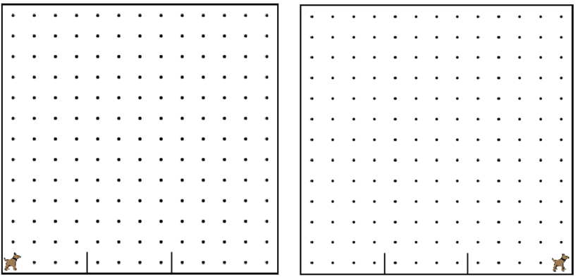

This is an example that we did in the video. You are encouraged to play around with it, to see how it all works. When you are done, click the arrow to go to the next problem. 這是我們在視頻中做了一個榜樣。我們鼓勵你玩它，看看它是如何工作的。當你完成後，單擊箭頭進入下一個問題。

/* * This program has karel jump over two 這個程序有卡雷爾跳了兩個 * hurdles and then move all of the way 障礙，然後將所有的方式 * to the edge of the world. 對世界的邊緣。 */ function start(){ 函數的開始(){ // Karel jumps two hurdles in this 卡雷爾跳躍在這個兩關 // program. 程序。 runToHurdle(); 運行要跨欄(); jumpHurdle(); 跳跨欄(); runToHurdle(); 運行要跨欄(); jumpHurdle(); 跳跨欄(); runToFinish(); 運行完成(); } /* * Precondition: Karel has just jumped the 前提條件：卡雷爾剛剛躍升 * last hurdle, and is facing east. 最後一關，並面向東方。 * Postcondition: Karel is all of the way 後置條件：卡雷爾是所有的方式 * at the end of the world. 在世界的盡頭。 */ function runToFinish(){ 函數運行完成(){ move(); 移動(); move(); 移動(); move(); 移動(); move(); 移動(); } /* * Precondition: Karel is facing east, three 前提條件：卡雷爾是面向東方，三 * spots away from a hurdle. 插播遠離障礙。 * Postcondition: Karel is standing right in front of a hurdle. 後置條件：卡雷爾是站在正確的一道坎面前。 */ function runToHurdle(){ 功能運行要跨欄(){ move(); 移動(); move(); 移動(); move(); 移動(); } /* * This function has karel jump over a 這個函數有卡雷爾跳過去一 * hurdle that is one row high. 障礙是一排高。 * Precondition: Karel is standing in front 前提條件：卡雷爾站在前面 * of a hurdle, facing east. 一道坎的，面向東方。 * Postcondition: Karel has just jumped over 後置條件：卡雷爾剛剛躍過 * a hurdle, and is facing east. 一個障礙，並面向東方。 */ function jumpHurdle(){ 函數跳轉跨欄(){ turnLeft(); 左轉(); move(); 移動(); turnRight(); 右轉(); move(); 移動(); turnRight(); 右轉(); move(); 移動(); turnLeft(); 左轉(); } /* This function has karel turn right. 這個函數有卡雷爾右轉。 */ function turnRight(){ 功能右轉(){ turnLeft(); 左轉(); turnLeft(); 左轉(); turnLeft(); 左轉(); }